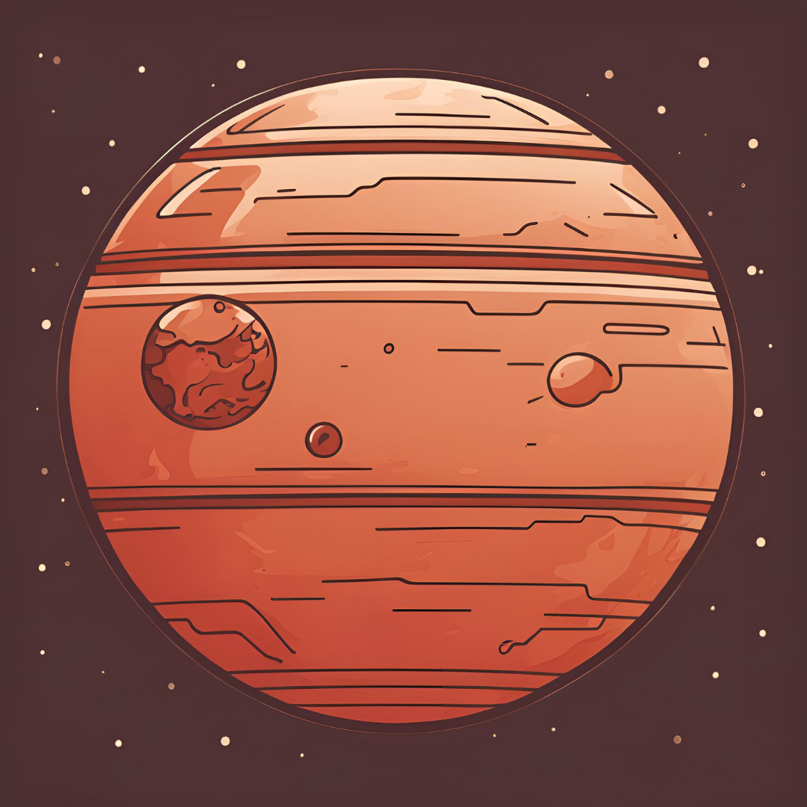

THE SOLAR SYSTEM SERIES
THE SOLAR SYSTEM SERIES consists emojis of Mercury, Venus, Mars, Jupiter, Saturn, Uranus, and Neptune.
- Aren't you curious about the unknown?
- Our interest in space
Why is there only the ☀️Sun, 🌏Earth, and 🪐Saturn in the current emojis? It's human nature to be curious about the unknown, especially the outer space. The SOLAR SYSTEM SERIES is a representation of our curiosity towards it.
Our interest in space is continuously growing, and it's crucial that emojis follow our needs. The solar system has been a worldwide interest for a long time, and it still is. So it's only acceptable that there should be emojis that depict the planets in the solar system, since emoji is a communication system used worldwide.
Previous versions of the planets
- Mercury
- Venus
- Mars 
- Jupiter
- Uranus
- Neptune